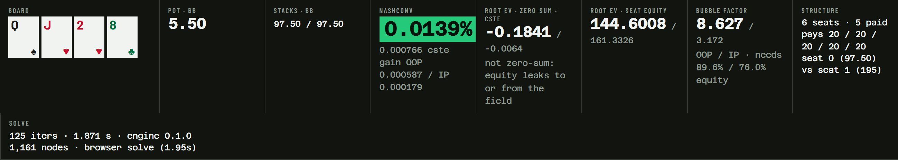

Spade plate
Convergence is measured, never asserted.
postflop is a study tool for postflop decisions in heads-up no-limit hold'em: what to bet on a given board, which hands should do it, and what it costs you to get it wrong. Underneath is an open-source Rust Discounted CFR engine with a full best-response exploitability calculator, a native CLI, WebAssembly bindings, and a browser workbench. Every exploitability and EV figure it prints comes straight out of the best-response calculator.
MIT licensed · Rust engine · tournament ICM
Solves right in your browser, nothing to install.
Action ink / inside a cell
Suit ink / only on a card face
Four inks, two jobs, never in the same rectangle. Inside a strategy cell an ink means an action. On a card face it means a suit. The check band carries a 45° overprint hatch so the mix survives red-green colour blindness and a greyscale print.
Heart plate
launch.mp41920 × 1080captions on by default
Seventy-seven
seconds.
The whole argument, filmed: why a solver that grades its own homework can be confidently wrong, and what it looks like to measure convergence instead. Product footage is a real screen recording of the workbench.
What it covers
The best-response calculator that measures exploitability separately from the solve. Walking the tree: per-hand strategies, EVs, blockers, every runout. The same Rust engine running in the browser as WebAssembly. Node locking. Then the source.
- Runtime
- 1:17
- Captions
- English, on by default
- Footage
- Real workbench capture
- Narration
- Text-to-speech
Club plate
Start here.
Three ways in, depending on how much of this you have seen before. Nothing needs installing to take the first one.
Take the tour
The workbench loads a solved turn spot the moment it opens, so there is nothing to set up. A guided tour then walks every panel in order: the strategy grid, the drill-down behind a single cell, the EV and regret views, blocker scores, the runout selector, the trainer, and how to solve a spot of your own.
Or open the workbench and find your own way around.
Five terms first
- Spot
- One postflop situation, fully specified: the board, what each player can be holding, how deep the stacks are, and how much is already in the middle.
- Range
- Not one hand but every hand a player could have here, each with a weight. A solver reasons about all of them at once, which is why its answer is a mix rather than a single move.
- Exploitability
- How much a perfect opponent could win against this strategy, printed as a percentage of the pot. Zero would be unbeatable. postflop measures it with a separate best-response calculator rather than asserting the solve has converged, because a solver grading its own homework can be confidently wrong.
- Blocker
- A card in your hand is a card the opponent cannot have. Holding the ace of hearts removes every one of their hands that needed it, which is why the same bluff is worth more with some cards than others.
- Node lock
- Freezing one decision to a fixed strategy and solving the rest of the tree around it. It is how you ask what beats a player who never bluffs this river, instead of what beats a perfect one.
If you know PioSOLVER or GTO Wizard
The 13×13 range grid, the EV and regret views, and node locking all do what you already expect them to do. The naming and the notation carry over: ranges parse in PioSOLVER format, weighted combos included.
Three things are different, and they are the reasons to look. Exploitability is not a claim the solver makes about itself: a best-response calculator, separate from the solve, measures it and reports it in chips and as a percentage of the pot at every interval. The whole thing is MIT-licensed source, so the algorithm, the tests, and the numbers on this page can all be read and re-run. And one solution file round-trips: solve a large tree with the CLI on a real machine, open that same JSON in a browser anywhere, export it back out identically.
Give it a spot. Walk the whole tree.
Board, both ranges, stacks, pot, bet sizings, in a small TOML file. The engine computes an approximate Nash equilibrium with a measured exploitability bound, then lets you inspect everything: per-hand strategies, per-hand EVs, action frequencies, and every runout.

Discounted CFR, full vector traversal
Brown & Sandholm's DCFR with alternating updates (α=1.5, β=0, γ=2, all configurable), a γ-weighted average strategy, and an optional CFR+-style regret floor. Every hand combo is traversed on every iteration. No sampling in the solve path. Why it matters at the table: the mix you see is computed for every single combo, not smeared across whichever hands happened to get sampled.
Exact card removal everywhere
Fold and showdown evaluation run O(N+M) sweeps with per-card weight sums and inclusion-exclusion; ties are handled as distinct rank groups. Blocked combos are filtered out of the working vectors, never zero-weighted: 1176 live combos on a flop, 1128 on the turn, 1081 on the river. Why it matters at the table: the two cards in your hand change what the opponent can hold, so a hand that blocks their value gets its own answer instead of being averaged in with a hand that blocks nothing.
Deterministic parallelism
The traversal fans out across chance-node runouts with rayon using a parallel-map, sequential-reduce design. Solved strategies are bit-identical for every thread count: 1 thread and 24 threads produce the same file. Why it matters at the table: a frequency you quote from a solve is checkable, because the same spot on someone else's machine returns the same answer rather than a nearby one.
Memory-conscious by construction
Flat arena game tree with no pointer chasing, chance tables shared across betting lines by board, and an optional i16 storage mode with per-node scale factors that roughly halves peak memory and documents its quantization floor. Why it matters at the table: it is the difference between a tree you can actually solve on the laptop in front of you and one you have to go and rent a machine for.
Suit isomorphism, exhaustively verified
Suits only matter relative to one another, so the 22,100 distinct flops collapse to 1,755 canonical classes. That mapping is not spot-checked: it is verified over every one of the 22,100. Why it matters at the table: Ah 7h 2c and Ad 7d 2c are the same problem, and the isomorphism map that says so is verified exhaustively, not spot-checked.
The spot file carries the whole rulebook
Rake as a percent with an optional chip cap, off by default. A raise cap, counted per street. An all-in threshold, so any sizing close enough to a shove collapses into the shove instead of cluttering the tree with a near-shove. All of it sits in the same TOML as the board. Why it matters at the table: the tree you solve can be the game you actually sit in, rake included, rather than a rake-free version of it.
Diamond plate
Nothing on this
page is estimated.
All numbers below were measured on a 24-logical-core Windows machine using the benchmark harnesses committed in engine/examples/. Run them yourself.
7-card hand evaluation, 10M-hand pool, best of 3 passes
engine/examples/eval_bench.rs10M-hand pool, 3 passes
77,000,000evals / sec
Full flop solve: 830k-node tree, 305 vs 196 combos, 1 thread → 24 threads
engine/examples/solve_flop.rsmilestone4.toml · 24 threads
2524 → 370ms / iter
6.8×
Peak memory on that same spot (f32 storage; ~0.52× with i16)
engine/examples/solve_flop.rs--report-memory
1513megabytes
Turn spot, 1,881 nodes, solved to 0.12% of pot
engine/examples/solve_turn.rssample-turn.toml
0.2seconds
Toy river spot: 20k iterations plus 200 best-response reports
engine/examples/solve_river.rsbr_interval = 100
32milliseconds
Reproduce cargo run -p engine --release --example solve_flop -- engine/examples/configs/milestone4.toml 400
The workbench runs in your browser.
The same engine, compiled to WebAssembly. It opens with a solved spot already on screen: the Qs Jh 2h 8c turn, BTN vs BB single-raised, 100bb. That is one of two bundled sample solutions, alongside a Ks 7d 2c 8h 3d river polarisation drill, and a guided tour walks every panel from there. Load a solution produced by the CLI instead, or solve small spots directly on the page.
Drill into any combo
Click a cell and see every combo behind it: per-combo weights, the full action mix, and per-hand EVs in zero-sum chips. The IP range panel alongside shows reach-weighted density at the same node.
 Combo drill-down. One cell opened into its combos: weight, mix, per-action EV.
Combo drill-down. One cell opened into its combos: weight, mix, per-action EV.Paint ranges by hand or by weight
An interactive range editor with paintable grids, a weight brush, a top-X% slider, and preset spots. Ranges accept standard and PioSOLVER notation, weighted combos included, over all 1326 combos. The detail frame under the editor is the weight brush at work: a hand can sit at any fraction of a full combo, so a range that plays 22 half the time is written as exactly that, and the notation carries the weight back out with it.

 Range editor. Two paintable grids, and the weight brush at 50 per cent alongside.
Range editor. Two paintable grids, and the weight brush at 50 per cent alongside.Watch it converge, live
Solves report exploitability at every interval while they run. The curve you watch is the best-response calculator's own output, in chips and as a percentage of the pot, recomputed at every report.
 Solve panel. Convergence while it runs: the curve and 26 measured reports.
Solve panel. Convergence while it runs: the curve and 26 measured reports.One URL, one file
Every view is a link. The tab, the node you are standing on, and the combo you have selected all live in the URL, so a line you want a second opinion on is a paste, not a set of instructions. The solution file travels the same way: solve a big tree with the CLI on a real machine, open that JSON in the browser anywhere, export it back out identically. The CLI uses every core; the browser build is single-threaded, and the file does not care which one made it.
Priced before it runs
The solve panel above builds the tree, prices the solver's memory bill before the solve commits to it, and prints the tree stats it measured. A large spot gets a warning; one that would take the tab down with it gets a hard red gate instead of an optimistic start. The solve itself runs in a Web Worker, so the page keeps scrolling, keeps drawing the curve, and keeps answering while the engine works.
See which hands actually care
Beyond frequencies: colour the grid by the highest-EV action per hand, or by regret, the chips lost taking the worse action, fading out where the solver is indifferent. Per-action EVs sit next to every combo's strategy bar, so a 63/37 mix becomes "these six combos are worth real chips, the rest are free."
 Strategy and regret. The same node on two surfaces, with the combo's own EVs.
Strategy and regret. The same node on two surfaces, with the combo's own EVs.Train against the solve
Self-contained: pick a sample spot or set up any board, ranges and stacks right in the trainer, and it deals the first hand the moment the solve converges: board, pot, and line, but not the strategy. Pick an action and it is graded on the chips it costs, Best through Blunder, with the full solver mix and a d100 randomizer revealed after you answer. Every spot carries its table context: positions, starting stacks, the preflop action, live range widths, and the VPIP/PFR profile each range models. A running session score, a worst-hands-first review list, a "close decisions only" filter, and type an exact hand like AhKd to drill that combo on every deal.
 Trainer. One graded decision, the solver mix revealed, and the session card.
Trainer. One graded decision, the solver mix revealed, and the session card.Lock a node, solve the exploit
Freeze any decision node, the strategy on screen or hand-written per-action frequencies in the TOML, and re-solve: the rest of the tree becomes the equilibrium counter-strategy to "villain never bluffs here." Locks travel inside the solution file, the structure guard holds stored strategies to them, and reported exploitability is measured against the locked profile. Locks captured on a different spot are refused, never silently re-applied.
 Node locks. One pending lock on the root, with remove and clear-all.
Node locks. One pending lock on the root, with remove and clear-all.Tournaments: solve for equity, not chips
Tick score this spot with ICM, enter every remaining stack at the table and the payout ladder, and say which two seats are in the hand. Terminal payoffs switch from chips to exact Malmuth-Harville tournament equity, so the strategy itself moves under ICM pressure. The chipEV solve of the same spot sits beside it with the frequency shift called out, plus your bubble factor and required equity against the other seat. Five payout presets, or paste your own; the same block works from the CLI as --tournament.
Honest limit: under ICM the game is general-sum, so the headline is NashConv, each player's unilateral best-response gain, not exploitability. Zero means neither player gains by deviating alone; it does not promise a minimum result. The hand is still heads-up; the other seats are stacks that price your chips, not players who act.

Stat band. The same spot under ICM: NashConv, seat equity, bubble factor.Blocker scores
How much holding these two cards moves the opponent's frequencies, and the whole range ranked by it, so the best bluff cards sort to the top.
 Blocker panel. How the held cards move villain, and the range ranked by it.
Blocker panel. How the held cards move villain, and the range ranked by it.Every runout, coloured by consequence
A 52-card selector re-roots the inspector at any turn or river card, heat-coloured green to red by how each runout shifts hero EV, range-wide or for one selected combo, with arrow-key stepping between sibling cards.
 Runout selector. Forty-eight rivers shaded by hero EV, ranked beside the grid.
Runout selector. Forty-eight rivers shaded by hero EV, ranked beside the grid.All four plates · the cycle closes
Validated through four gated milestones.
In order, each with its committed test evidence. A milestone did not open until the previous one passed. One milestone per ink.
Kuhn poker
PassedConverges to the known analytic equilibrium family: exploitability 0.002% of pot, K-bet equal to 3× J-bet, game value −1/18. A failure here would have meant the solving core itself was wrong, before any poker was involved, on a toy game whose exact answer was already written down.
AKQ half-street game
PassedMatches the closed-form equilibrium derived from the indifference conditions, including the boundary case B ≥ P where the Nash set is a segment rather than a point. A failure here would have meant the solver could not recover an answer handed to it in closed form, and would have been quietly picking one point where a whole family is correct.
River spot
PassedIndifference conditions verified against hand algebra for named combos (bluff EV equals check EV, call EV equals fold EV within 1e-3). Bluff ratio 1/3 and minimum defense frequency 1/2 recovered on a blocker-free construction. A failure here would have meant the bluffing and calling frequencies it prints do not actually leave the opponent indifferent, which is the only reason to play them.
Full flop spot
PassedAn 830k-node tree whose exploitability falls monotonically from 16.5% to 0.22% of pot, zero-sum error at 7e-7, bit-identical across 1, 8, and 24-thread pools. A failure here would have meant everything above worked on toys and broke on a real board, which is exactly where a solver is worth having.
Beyond the milestones: the 7-card evaluator is checked against a slow reference on 1,000,000 random hands and exhaustively on all 2,598,960 five-card hands with zero mismatches. Terminal sweeps are property-tested against naive O(N·M) oracles at full 1081-combo width. The suit isomorphism collapse described above is checked the same way, exhaustively rather than by sample. And where the engine approximates, it says so: the CLI refuses the turn-sampling flag until an exact-labeled sampling mode exists. The solver never silently approximates.
Solve your first spot.
A spot is a small TOML file. Requires Rust (stable); Node 20+ and wasm-pack for the web UI.
# spot.toml board = "Qs Jh 2h" # 3, 4 or 5 cards: flop, turn or river oop_range = "22+,ATs+,KTs+,QTs+,JTs,T9s,98s,ATo+,KJo+" ip_range = "66+,A9s+,KTs+,QTs+,JTs,ATo+,KQo" effective_stack = 40.0 # chips behind, per player, at the root starting_pot = 6.0 # chips already in the middle max_iterations = 600 # hard iteration ceiling target_exploitability = 0.5 # stop at 0.5% of pot [sizings.oop.flop] # per street, per player, bet / raise / donk bet = { percents = [50.0], allin = false } [sizings.ip.flop] bet = { percents = [50.0], allin = false } raise = { percents = [60.0], allin = false }
1 · Build and solve
cargo build --release solver solve --config spot.toml \ --report-every 100 --out solution.json
2 · Inspect any line
show never re-solves: it rebuilds the deterministic tree and validates the file against it.
solver show --solution solution.json \ --line "check,bet:50" --combo AhKh
3 · Or skip all of that
The easiest local on-ramp: one command builds the Rust engine, the wasm package and the web dependencies, whichever of them are missing, starts the workbench and opens it in your browser. Or install nothing at all and use the hosted workbench.
python launch.py
- --storage f32|i16
- Half-precision strategy storage. Roughly halves peak memory, and documents its quantization floor rather than hiding it.
- --threads
- How many cores the solve uses. The file it writes is bit-identical whichever number you pick.
- --target-exploitability
- Stop as soon as the measured bound falls under this percent of the pot.
- --report-every
- How often the best-response calculator runs and prints. Every reported figure costs a real best-response pass.
- --board, --oop-range, --ip-range, --stack, --pot, --max-iterations, --out
- Override the matching TOML field for a single run, without editing the spot file.
- [rake] percent, cap
- Rake taken at every terminal, as a percent with an optional chip ceiling. Zero by default.
- raise_cap
- Maximum raises per street, not counting the opening bet.
- allin_threshold
- Percent at which a sizing close enough to a shove collapses into the shove itself.
- alpha, beta, gamma
- The Discounted CFR exponents: positive regret, negative regret, strategy averaging. Defaults α=1.5, β=0, γ=2.
- regret_floor
- CFR+ style: clamp cumulative regret at zero after every update, so a negative regret never has to be climbed back out of. Off by default.
- [[locks]] line, player, freqs
- Freeze a decision node, addressed as an action line from the root, and solve the rest of the tree around it. Use
strategyin place offreqsfor a full per-combo distribution.